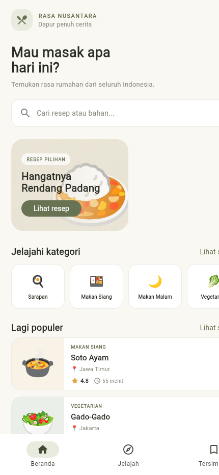

Aplikasi resep masakan Indonesia
Rasa Nusantara adalah aplikasi mobile untuk menemukan inspirasi masakan Indonesia dan kreasi rumahan. Pengguna dapat menelusuri resep, membaca bahan serta langkah memasak, lalu menyimpan resep pilihan.
Tema ini dipilih karena resep merupakan informasi praktis yang mudah dijelajahi melalui perangkat mobile. Katalog resep juga dapat dikembangkan menjadi layanan yang mengambil data melalui API.
Latar krem #FAF8F2 dan aksen hijau zaitun #687354 membangun suasana rumahan. Kartu putih memisahkan informasi resep, judul tebal menandai hierarki, sementara abu-abu dipakai untuk teks pendukung. Ilustrasi emoji membuat tiap hidangan mudah dikenali tanpa gambar dari internet.
Beranda berisi sapaan, pencarian, resep pilihan, kategori, dan kartu populer. Navigasi utama memiliki tiga tab: Beranda, Jelajah, dan Tersimpan. Kartu resep membuka detail yang berisi informasi hidangan, bahan, serta urutan langkah memasak.
Screenshot berikut menunjukkan implementasi halaman beranda pada target Flutter Web. Desain mengutamakan pencarian resep, akses cepat ke kategori, dan kartu hidangan pilihan.

Model Recipe memuat id, nama, daerah asal, kategori, durasi, tingkat kesulitan, rating, deskripsi, bahan, dan langkah. Daftar dummy disimpan terpisah dari widget sehingga dapat diganti repository/API pada pengembangan berikutnya.
UI memakai Scaffold, SafeArea, CustomScrollView, SliverList, ListView, Row, Column, Card, ChoiceChip, TextField, dan NavigationBar.
NavigationBar → Beranda / Jelajah / Tersimpan Pilih kartu resep → Navigator.push → Detail resep Tombol kembali → halaman sebelumnya
lib/main.dart Model Recipe, data dummy, halaman, dan navigasi screenshots/ Tangkapan layar implementasi README.md Ringkasan fitur dan langkah menjalankan aplikasi
Jalankan dengan flutter pub get lalu flutter run. Data favorit saat ini dikelola di memori dan akan kembali ke nilai awal saat aplikasi dimulai ulang.
Prototipe memiliki tiga halaman utama melalui navigasi tab serta halaman detail yang dibuka dari kartu resep. Beranda memberi titik masuk melalui resep pilihan dan kategori; Jelajah menyediakan pencarian langsung dan filter; Tersimpan menampilkan resep yang ditandai. Objek Recipe yang sama diteruskan ke halaman detail sehingga informasi bahan dan langkah sesuai dengan kartu yang dipilih.
Layout berbasis scroll dan komponen yang fleksibel menjaga susunan informasi pada berbagai tinggi layar. Analisis statis Flutter selesai tanpa temuan. Build web berhasil dibuat untuk mendokumentasikan tampilan.
Rasa Nusantara menerapkan navigasi tab, pencarian dan filter, daftar favorit, halaman detail, serta data dummy terstruktur dalam aplikasi Flutter. Pemisahan model resep membuat katalog siap dikembangkan ke data JSON/API. Tahap berikutnya dapat menambahkan penyimpanan favorit permanen, gambar hidangan, akun, dan pengujian pada berbagai perangkat.
main).